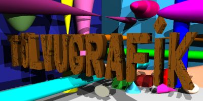

Tillögur að titilmyndum
Sem lausn við heimadæmi 3 áttu nemendur í Tölvugrafík að gera tillögu að
nýrri titilmynd fyrir heimasíðu námskeiðsins. Hér að neðan eru myndirnar
ásamt höfundum þeirra.
- Albert Einarsson
- Ari E. Sigurðsson
- Arnar Freyr Guðmundsson
- Atli Þorbjörnsson
- Árni Freyr Jónsson
- Berglind Guðmundsdóttir
- Dagmar Beckert
- Draupnir Guðmundsson
- Erlendur S. Guðnason
- Guðlaugur S. Egilsson
-
 Gunnar Á Þórarinsson
Gunnar Á Þórarinsson
- Hilmar V. Pétursson
-  Hjörtur Arnarson
- Jóhannes G. Guðmundsson
-
 Jón Gísli Lárusson
Jón Gísli Lárusson
- Jón Stefánsson
- Kristján Guðmundsson
- Magnús Logi Magnússon
- Magnús Logi Magnússon
- Óskar Aðalbjarnarson
- Rúnar Sigurjónsson
- Sigurður J. Eggertsson
- Þórður Gíslason
- Þórir Gunnarsson
- Örn Haraldsson
hh@rhi.hi.is, 2. nóvember, 1995.